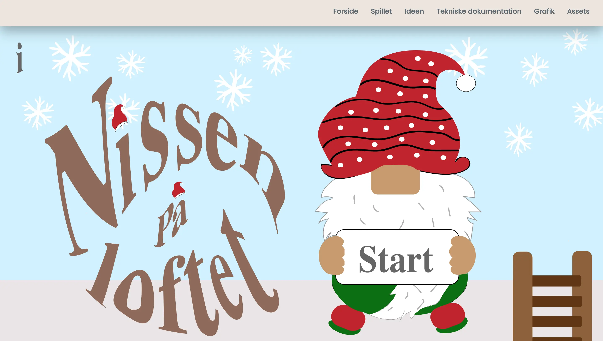
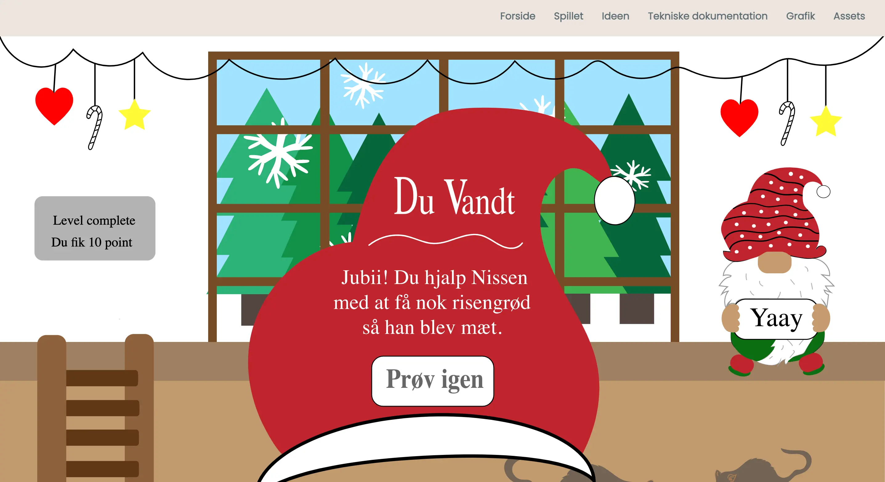

Tema 4 - Animation
04.04.01 Temaopgave
I tema 4 blev jeg introduceret til Javascript og CSS animationer. Ud fra Javascript samt HTML og CSS lavede jeg mit eget spil. Jeg brugte programmet Adobe Illustrator til at udvikle og rentegne mit eget spildesign samt spil-elementer. Jeg udviklede hvordan jeg gerne ville have mit spil til at virke via aktivitetsdiagram og state machine diagram, skitserings og idegenereringsteknikker. Mit eget spil hedder Nissen på loftet. Spillet handler om at man skal nå at samle så mange risengrød til nissen inden at tiden er løbet ud og hvis dette mislykkes, så vil nissen ikke blive mæt og så vil Nissen ikke kunne lave gaver.

